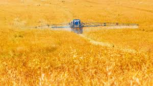
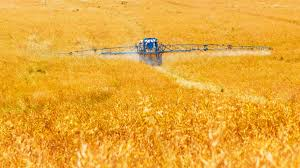
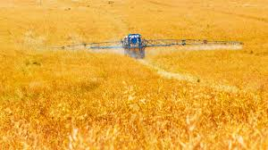

Galeria
 

"Este projeto visa destacar as oportunidades de desenvolvimento sistentável e inovador que emergem da integração entre áreas rurais e urbanas."

"Este projeto mudou minha vida, me proporcionando novas oportunidades de crecimento e desenvolvimento."
- João SilvaA integração entre o campo e a cidade troxe inivação e sustentabilidade para nossa comunidade.
- Maria OliveiraDescubra como novos projetos estão ajudando a conectar áreas rurais e urbanas de maneiras sustentaveis
Leia maisVeja como a tecnologia está transformando as práticas agrícolas e criando novas oportunidades
leia mais